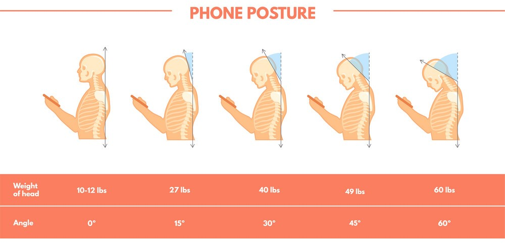

Unlocking the Secrets: The Ultimate Checklist for a Healthy Neck
Are you tired of a stiff and achyneck? Do you constantly find yourself seeking relief from neck pain? Look no further! This ultimate checklist is here to unveil the secrets of achieving a healthyneck. Whether you spend your days hunched over a computer or have a habit of sleeping in awkward positions, we have the tips and tricks you need to unlock the potential of your neck.
Our comprehensive checklist covers everything from proper postureand ergonomic adjustments to targeted exercises and self-caretechniques. Discover how small changes in your daily routine can make a world of difference in alleviating neck pain and improving your overall well-being.
The Importance of a Healthy Neck
The neck, also known as the cervical spine, plays a crucial role in supporting the weight of our head and facilitating movement. A healthy neck allows us to turn, tilt, and nod our heads freely, enabling us to perform daily activities without discomfort. However, many of us neglect the health of our neck until we experience pain or stiffness.
A healthy neck not only contributes to our physical well-being but also impacts our overall quality of life. Neck pain can interfere with our ability to work, exercise, and enjoy recreational activities. It can also lead to headaches, shoulder pain, and even affect our mood and mental well-being.
Taking care of our neck should be a priority, especially in today's digital age where we spend hours hunched over screens. By implementing a few simple changes and incorporating neck-focused exercises int our routine,we can prevent and alleviate neck pain, promote proper alignment, and improve our overallposture.
Proper neck care is essential for maintaining a pain-free and functional neck. So, let's dive into the various aspects of neck health and how we can unlock the secrets to a healthy neck.
Common Causes of Neck Pain
Before we delve into the checklist, let's explore some of the common causes of neckpain. Understanding the underlying causes can help us identify the triggers and take appropriate measures to mitigate or avoid them.
1. Poor Posture: Sitting or standing with rounded shoulders and a forward head posture places excessive strain on the neck muscles and joints, leading to discomfort and pain.
2. Muscle Strain: Overuse of neck muscles,such as lifting heavy objects or repetitive motions, can cause muscle strain and result in neckpain.
3. Poor Sleeping Positions: Sleeping in awkward positions or using an unsupportive pillow can strain the neckmuscles and lead to stiffness and pain.
4. Injury or Trauma: Whiplash from car accidents, sports injuries, or falls can cause damage to the neck structures, resulting in acute or chronic neckpain.
5. Degenerative Conditions: Conditions like osteoarthritis, cervical herniated disc, or spinal stenosis can cause neck pain due to the degeneration of the cervical spine.
By identifying the cause of our neckpain, we can tail or our approachto address the specific issue and find appropriate solutions for lasting relief.
Signs and Symptoms of Neck Problems
Neck problems can manifest in various ways, and recognizing the signs and symptoms is crucial for early intervention and treatment. Here are some common indicators that you may be experiencing neck problems:
6. Neck Pain: Persistent or recurring pain in the neck region, ranging from a dull ache to sharp, stabbing sensations.
7. Stiffness: Difficulty moving the neck, especially when trying to turn or tilt the head
8. Headaches: Neck-related headaches, often originating from tension or muscle imbalances in the neck and upperback.
9. Radiating Pain: Pain that starts in the neck and travels down the arm, often accompanied by numbness, tingling, or weakness in the armor hand.
10.Limited Range of Motion: Inability to move the neck through its full range of motion, affecting activities like driving, exercising, or looking over the shoulder.
If you experience any of these symptoms, it's important to consult a healthcare professional for a proper diagnosis and guidance on managing your neckproblems. Early intervention and appropriate treatment can prevent the condition from worsening and help you regain your neck's health and functionality.
The Role of Posture in Maintaining a Healthy Neck
One of the most crucial aspects of neck health is maintaining proper posture. Poor posture, especially when sustained forex tended periods, places excessives train on the neckmuscles, ligaments, and spinaldiscs, leading to discomfort and pain. By adopting good posture habits, we can alleviate stress on our necks and promote a healthier alignment.
Here are a few tips to improve your posture and protect your neck:
11.Sit and Stand Tall: Keep your shoulders back, spine aligned, and head balanced over your shoulders. Avoids louching or protruding your head forward.
12.Adjust Your Workspace: Position your computer monitor at eye level, ensure your chair supports your lowerback, and keep your feet flaton the ground. Use a head set or speaker phone for prolonged phone conversations to avoid cradling the phone between your ear and shoulder.
13.Use Supportive Pillows: Choose a pillow that adequately supports your neck's natural curve when sleeping. Avoid pillows that are too high or too flat, as they can strain the neck.
14.Take Breaks: If you have a sedentary job, make sure to take regular breaks to stretch and move around. Incorporate neck stretches and exercises into your routine to relieve tension and promote flexibility.
By making conscious efforts to maintain proper posture through out the day, we can significantly reduce the strain on our necks and prevent the development of pain and discomfort.
Stretching Exercises for Neck Pain Relief
Stretching is an effective way to relieve neck pain, reduce muscle tension, and improve flexibility. Incorporating regular stretching exercises into your routine can help alleviate discomfort and promote a healthy, pain-freeneck. Here are some simple stretches to try:
15.Neck Tilt: Sit or stand tall, gently tilt your head to oneside, bringing your ear towards your shoulder. Hold the stretch for 15-30seconds, then repeat on the otherside.
16.Neck Rotation: Turn your head to one side, looking over your shoulder. Hold for 15-30seconds, then repeat on the otherside. Remember to move with in your pain-free range of motion.
17.Neck Retraction: While sitting or standing, gently tuck your chin inwards, creating a doublechin. Hold the position for a few seconds, then release. Repeat several times.
18.Upper Trapezius Stretch: Sit or stand tall, gently tilt your head to one side,and reach your opposite arm over your head, placing your handon the side of your head. Apply gentle pressure to enhance the stretch. Hold for 15-30 seconds, then repeat on the otherside.
Remember to breathe deeply and relax during each stretch. Avoid any movements or positions that cause pain or discomfort. If you have a pre- existing neck condition or are unsure about which stretches are suitable for you, consult a health care professional for guidance.
Strengthening Exercises for a Strong Neck
In addition to stretching,strengthening exercises can help improve the stability and strength of the neck muscles, reducing the risk of pain and injury. Strong neckmuscles provide better support for the cervical spine and promote proper alignment. Here are a few exercises to strengthen your neck:
19.Neck Retraction with Resistance: Sit tall with a resistance band looped around the back of your head.Gently retract your head, pushing against the resistance of the band. Hold for a few seconds, then release. Repeat several times.
20.Isometric Neck Exercise: Place your hand on your forehead and gently push your forehead against your hand,creating resistance. Hold for a few seconds, then release. Repeat with your hand on the back of your head and on each side of your head.
21.Neck Extension: Lie on your stomach with your arms by yoursides. Slowly lift your head, keeping your gaze towards the floor.Hold for a few seconds, then lower your head back down. Repeat several times.
22.Shoulder Shrugs: Sit or stand tall, lift your shoulders towards your ears, and hold for a few seconds. Relax and repeat several times.
Remember to start with light resistance and gradually increase as your neck muscles become stronger. If you experience any pain or discomfort during these exercises,stop immediately and consult a health care professional.
Ergonomic Tips for a Neck-Friendly Workspace
Most of us spend a significant amount of time working a tour desks or using digital devices.Ensuring a neck-friendly work space is essential for maintaining good posture and preventing neck pain.Here are some ergonomic tips to optimize your workspace:
23.Chair Height and Support: Adjust your chair height so that your feet are flat on the floor and your knees are at a 90-degree angle. Use a chair that provides adequate lumbar support to maintain the natural curve of your lowerback.
24.Monitor Position: Position your computer monitor at eye level, directly in front of you, to avoid straining your neck by looking down or tilting your head.
25.Keyboard and Mouse Placement: Keep your keyboard and mouse at a comfortable height, allowing your elbows to rest at a 90-degree angle. Avoid reaching or stretching to use them.
26.Take Micro Breaks: Integrate short breaks into your work routine to stretch, movearound, and give your neck a break from prolonged static positions.
By implementing these ergonomic adjustments, you can create a workspace that supports your neck health and minimizes the risk of developing pain or discomfort.
Lifestyle Changes to Promote Neck Health
Apart from posture and exercise, there are various lifestyle changes we can make to support the health of our necks. These changes involve incorporating healthy habits into our daily routine and avoiding activities that strain or put excessive stress on our necks. Here are some lifestyle changes to consider:
27.Stay Active: Engage in regular physical activity to strengthen your neck muscles and improve overall flexibility and posture. Incorporate exercises that target the neck,such as yoga or Pilates.
28.Maintain a Healthy Weight: Excess weight can place additional strain on the neck and contribute to pain and discomfort. Aim for a healthy weight through a balanced diet and regular exercise.
29.Stay Hydrated: Proper hydration helps maintain the elasticity of spinal discs, reducing the risk of degenerative conditions that can cause neck pain.
30.Mind Your Sleeping Position: Opt for a comfortable and supportive pillow and mattress that align with your preferred sleeping position. Avoid sleeping on your stomach, as it can strain the neck.
31.Stress Management: Chronic stress can lead to muscle tension and exacerbate neck pain. Practice stress management techniques such as deep breathing, meditation, or engaging in hobbies to reduce stress levels
By making these lifestyle changes,we can create an environment that fosters neck health and promotes overall well-being.
Seeking Professional Help for Neck Pain
While self-care measures can be effective in managing neckpain,it's essential to seek professional help if the pain persists or worsens.A Professional Physical therapist can provide a thorough evaluation, diagnosis, and personalized treatment plan tailored to your specific needs
Professional treatments for neckpain may include manual therapy, targeted exercises, postural corrections, and other modalities to alleviate pain, improvemobility, andrestorefunction. They can also offer guidance on preventing future neck problems and maintaining a healthy neck in the long term.
Remember, it's crucial to consult a health care professional if you experience severe or persistent neck pain,have associated symptoms like numbness or weakness, or if your neckpain is the result of an accident or injury.
Conclusion: Taking Care of Your Neck for a Pain-Free Future
A healthy neck is key to a pain-free and functional life. By following the ultimate check list for a healthy neck, incorporating good posture habits, performing targeted exercises, making ergonomic adjustments, and adopting a neck-friendly lifestyle, you can unlock the secrets to a healthy and pain-freeneck.
Remember to listen to your body, takebreaks, and seek professional help when needed. With consistent effort and self-care, you can bid farewell to neck pain and embrace a flexible, strong, and pain-free neck.
Don't let neck pain hold you back any longer. Embrace the power of self- care and prioritize the health of your neck. Implement the tips and techniques outlined in this checklist, and you'll be well on your way to a pain-free future. Unlock the secrets to a healthy neck, and experience the transformation that awaits you. Your neck will thank you for it.
Remember, a healthy neck is not a luxury; it's a necessity. Take the first step and embark on the journey towards a healthier, happier you. Invest in your neck health today, and unlock the potential for a pain-free future!
Please note that the content provided in this article is for informational purposes only and should not be considered medical advice. Always consult with a healthcare professional before starting any exercise program or making significant changes to your lifestyle.
From Posture to Prosperity: The Powerful Link Between Head Neck Alignment and Well-Being
Did you know that the alignment of your head and neck can have a profound impact on your overall well-being? It may seem surprising, but the way you hold your head and the position of your neck can affect everything from your posture to your prosperity. In this article, we explore the powerful link between head neck alignment and well-being, and how making small adjustment scan lead to significant improvements in your life.
Understanding Head Neck Alignment
Proper alignment of the head and neck is vital for supporting the spine, maintaining balance, and promoting optimal nervous system function. When the head is held in the correct position, it ensures that the weight is evenly distributed along the spine, reducing the risk of pain and discomfort. Furthermore, it can enhance bloodflow, digestion, and even brain function.
To understand head neck alignment, imagine a string pulling your headup from the top. This imaginary string should align with the center of your ear, shoulder joint, hipjoint, knee, and ankle. When these points are in alignment, it creates a straight line from the top of your head to the base of your spine. This alignment allows the muscles and ligaments in your neck to work efficiently, reducing strain and tension.
The Impact Of Head Neck Alignment On Well-Being
The impact of head neck alignment on well-being extends far beyond just physical health. When your head and neck are properly aligned, it can have a positive effect on your mental and emotional well-being as well. Research has shown that poor head neck alignment can contribute to chronic pain , headaches, fatigue, and even mood disorders.
Misalignment of the head and neck can lead to a variety of issues. For example, it can cause compression of the nerves and blood vessels, leading to reduced circulation and oxygen flow to the brain. This can result in decreased cognitive function, difficulty concentrating, and even memory problems. Additionally, poor head neck alignment can put strain on the muscles and joints in the neck, leading to chronic pain and discomfort.
Common Issues Related To Poor Head Neck Alignment
Many individuals suffer from common issues related to poor head neck alignment without even realizing the cause of their discomfort. Chronic neck pain, frequent headaches, and shoulder tension are just a few examples of the problems that can arise from misalignment.
One common issue related to poor head neck alignment is forward head posture. This occurs when the head protrudes forward, causing the weight of the head to be improperly distributed along the spine. Forward head posture can lead to muscle imbalances, increased tension in the neck and shoulders, and even spinal misalignment.
Another common issue is the development of a hunched posture, often referred to as "textneck." Textneck is becoming increasingly prevalent due to the widespread use of smartphones and tablets. This posture involves a forward curvature of the upper back and a downward tilt of the head, placing excessive strain on the neck and upper back muscles.
The Role Of Posture In Head Neck Alignment
Posture plays a crucial role in maintaining proper head neck alignment. When you have good posture, it means that your body is in alignment, with the spine in its natural curves and the head and neck held in a neutral position. Good posture distributes the weight of the body evenly along the spine, reducing the risk of strain and pain.
To improve your posture and promote proper head neck alignment, it's important to be mindful of your body position throughout the day. When sitting, make sure to sit up straight with your shoulders back and your head aligned with your spine. Avoids louching or hunching forward, as this can put strain on the neck and back muscles.
When standing, imagine a string pulling you up from the top of your head, elongatingyourspineandaligningyourhead,neck,andshoulders.Engage your core muscles to support your spine and maintain a balanced posture. Regularly practicing good posture can help strengthen the muscles that support proper head neck alignment, making it easier to maintain this alignment over time.
Techniques And Exercises For Improving Head Neck Alignment
There are several techniques and exercises that can help improve head neck alignment and promote overall well-being. These exercises focus on strengthening the muscles that support the head and neck, improving flexibility, and promoting proper alignment.
One effective exercise is the chin tuck. To perform this exercise, sit or stand with your back against a wall. Gently tuck your chin in towards your chest, creating a double chin. Hold this position for a few seconds, then release. Repeattheexerciseseveraltimesthroughoutthedaytostrengthenthe muscles that support proper head neck alignment.
Another helpful exercise is the neck stretch. Start by sitting or standing upright with your shoulders relaxed. Slowly tilt your head to the right, bringing your right ear towards your right shoulder. Hold this stretch for 15- 30 seconds, then return to the starting position. Repeat on the left side. This exercise helps improve flexibility in the neck muscles and promotes better head neck alignment.
In addition to exercises, incorporating mindfulness and relaxation techniques into your daily routine can also be beneficial for improving head neckalignment. Practices such as yoga, meditation, and deep breathing can help reduce tension and promote relaxation throughout the body,including the neck and shoulders.
The Benefits Of Proper Head Neck Alignment
Proper head neck alignment offers a wide range of benefits for your overall well-being. When your head and neck are aligned, it reduces strain on the muscles and joints, alleviating pain and discomfort. It also improves circulation and oxygen flow to the brain, promoting better cognitive function and overall brain health.
Good head neck alignment can also have a positive impact on your appearance. When you have proper alignment, it creates a sense of balance and symmetry in your posture, making you look taller and more confident. Additionally, it can improve your breathing and vocal projection, enhancing your communication skills.
Furthermore, proper head neck alignment can improve your energy levels and mood. When your body is aligned and balanced, it allows for more efficient energy flow throughout the body, reducing fatigue and promoting a sense of vitality. Additionally, good alignment can help relieve stress and tension, leading to a more positive and relaxed state of mind.
How To Maintain Good Head Neck Alignment Throughout The Day
Maintaining good head neck alignment throughout the day requires conscious effort and awareness of your body position. Here are some tips to help you maintain proper alignment:
1. Be mindful of your posture when sitting or standing. Sit up straight, with your shoulders back and your head aligned with your spine. When standing, imagine a string pulling you up from the top of your head, elongating your spine.
2. Take regular breaks from sitting. Prolonged sitting can lead to poor posture and misalignment. Get up and move around every hour, stretch your neck and shoulders, and engage in gentle movements to relieve tension.
3. Use ergonomic equipment. Invest in a supportive chair and an ergonomic desk setup that promotes good posture. Ensure that your computer screen is at eye level to prevent unnecessary strain on the neck.
4. Incorporate regular stretching and strengthening exercises into your routine. Exercises that target the muscles that support the head and neck can help improve alignment and reduce tension.
5. Practice mindfulness and relaxation techniques. Engaging in activities such as yoga, meditation, and deep breathing can help reduce stress and tension, promoting better head neck alignment.
By incorporating these habits into your daily routine, you can maintain good head neck alignment and experience the many benefits it offers for your overall well-being.
Professional Help For Addressing Head Neck Alignment Issues
If you are experiencing chronic pain or discomfort related to head neck alignment, seeking professional help can be beneficial. Chiropractors, physical therapists, and other healthcare professionals specialize in assessing and treating musculoskeletal issues,including those related to head neck alignment.
A professional can evaluate your posture, alignment, and any underlying issues that may be contributing to your discomfort. They can provide targeted treatment, such as adjustments, manual therapies, exercises, and stretches to help improve your head neck alignment and alleviate pain.
Additionally, a professional can provide guidance on ergonomics and proper body mechanics to help you maintain good head neck alignment in your daily activities. They canal so offer personalized recommendations for exercises and lifestyle modifications that will support your overall well- being.
Case Studies Of Individuals Who Improved Their Well-Being Through Head Neck Alignment
To illustrate the impact of head neck alignment on overall well-being, let's explore a few case studies of individuals who have experienced significant improvements through addressing their alignmen tissues.
Case Study 1: Sanya Sanya had been experiencing chronic neck pain and frequent headaches for years.She visited a chiro practor who identified her forward head posture as the root cause of her discomfort. Through a combination of Manual Therapy, exercises, and postural retraining, Sanya was able to improve her head neck alignment. As a result, her pain decreased, and she experienced fewer headaches. Sarah's overall well-being improved, and she regained a sense of vitality and energy.
Case Study 2: Mohan Mohan had a sedentary desk job and spent hours each day hunched over his computer. He began to develop text neck, experiencing neck and shoulder pain on a regular basis. Mohan sought the help of a physical therapist who provided him with exercises and stretches to strengthen the muscles that support proper head neck alignment. With consistent effort and improved posture, Mohan was able to alleviate his pain and improve his overall well-being. He now practices good posture and takes regular breaks from sitting to prevent future issues.
These case studies demonstrate the transformative power of addressing head neck alignment issues. By making small adjustments and seeking professional help when needed, individual scan significantly improve their well-being and quality of life.
Conclusion: Embracing The Connection Between Head Neck Alignment And Overall Well-Being
In conclusion, head neck alignment plays a crucial role in supporting your overall well-being. Proper alignment of the head and neck promotes optimal spinal function, reduces pain and discomfort, improves circulation and brain function, and enhances your appearance, energy levels, and mood.
By understanding the importance of head neck alignment and making conscious efforts to maintain good posture, you can experience the transformative effects on your well-being. Incorporating exercises, mindfulness practices, and seeking professional help when needed can further enhance your journey towards proper alignment and improved overall health.
Remember, small changes in your head neck alignment can lead to significant improvements in your life. Embrace the connection between posture and prosperity, and unlock the potential for a healthier, happier you.